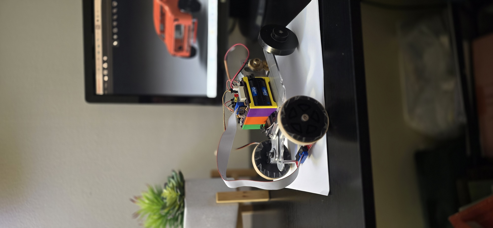
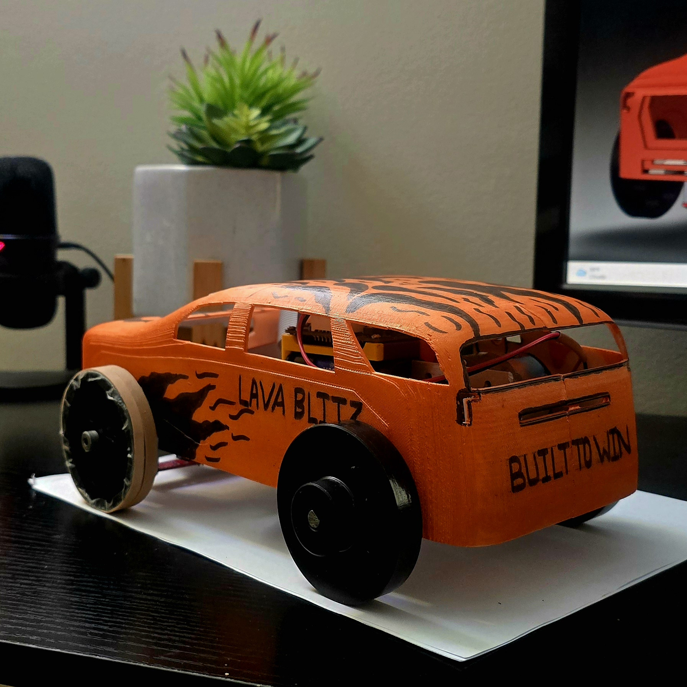
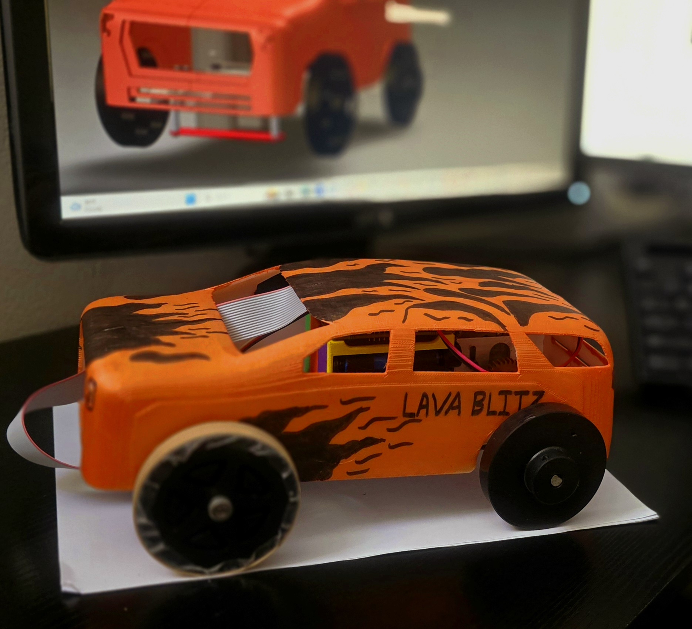
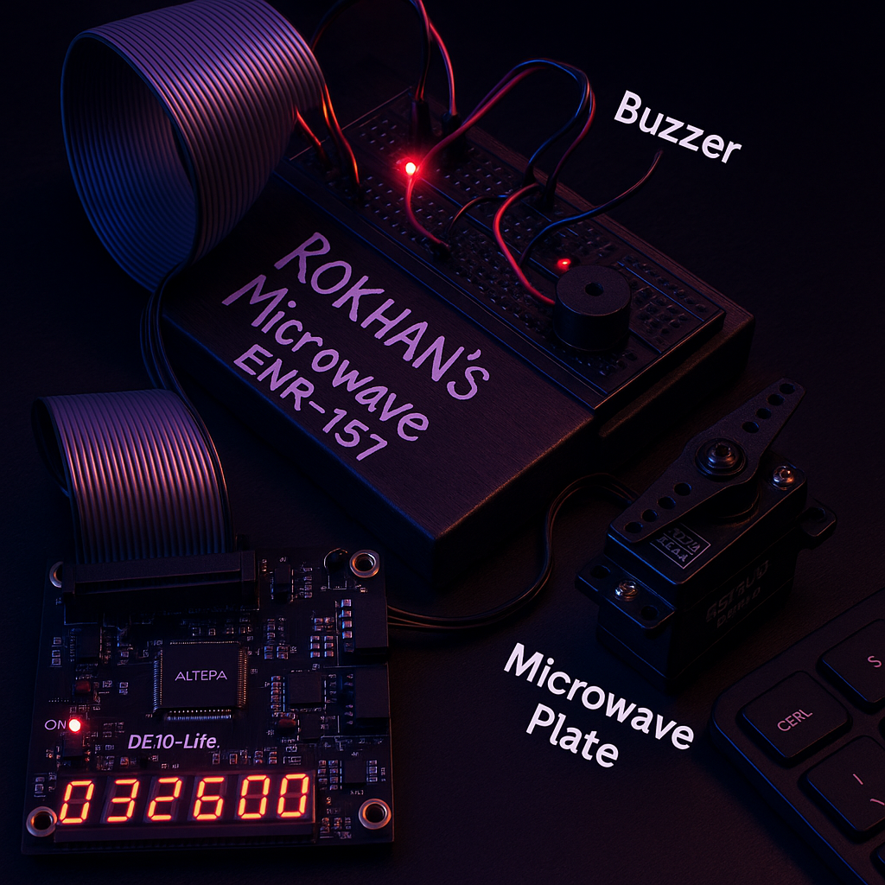
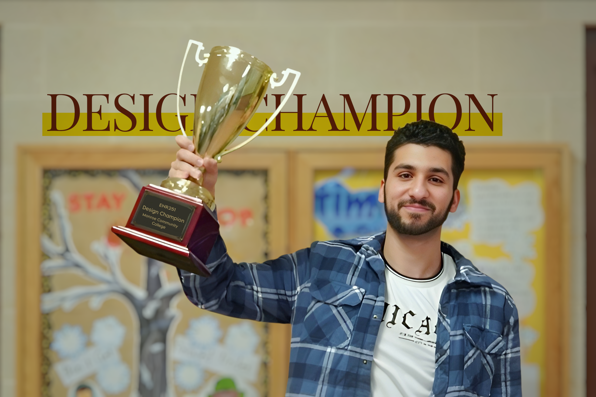
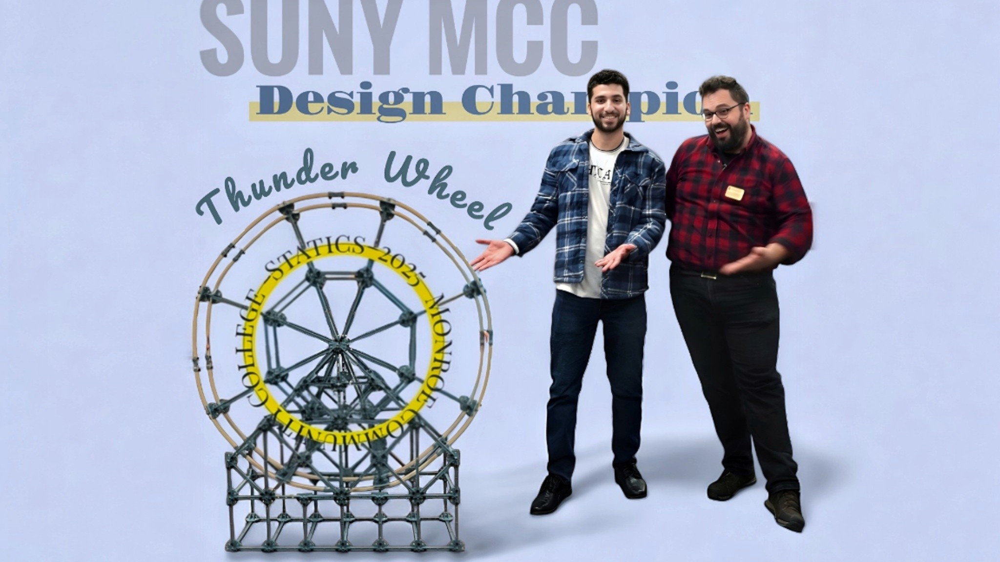
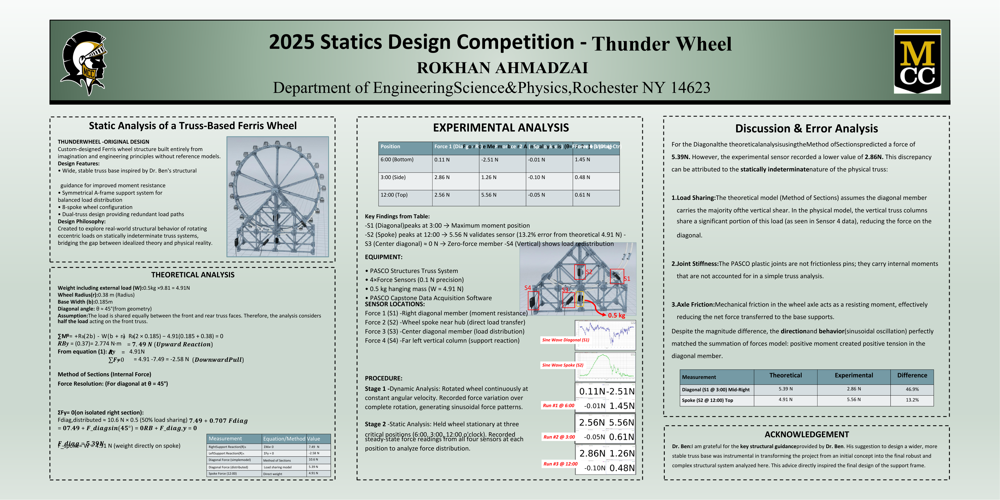

01 // GLOBAL_RESILIENCE
>> PROBLEM_STATEMENT
Navigating severe geopolitical instability to direct the emergency international relocation and resettlement of a multi-member family from Afghanistan to the US. Required immediate mastery of executive decision-making, crisis management, and legal frameworks while sustaining rigorous STEM academic excellence.
>> TECH_&_SOFT_STACK
>> PERFORMANCE_OUTCOME
Successfully established long-term housing and financial independence. Leveraged resilience to empower underrepresented students as a TRIO Peer Mentor and MCC Library Assistant. Authored and presented a core study on scholastic resilience.
02 // AUTONOMOUS_SYSTEMS
>> PROBLEM_STATEMENT
Design, program, and refine an autonomous EV3 platform to navigate a color-coded arena, detect randomized targets, and execute precise physical manipulation to sort and score standard and challenging black pucks under strict time constraints.
>> HARDWARE_&_LOGIC
Developed robust sensor-fusion algorithm preventing color/light sensor conflicts. Engineered "The Claw" lever mechanism. Scored all pucks within 2m:45s parameter window.
03 // MECH_PROTOTYPING
>> PROBLEM_STATEMENT
Machine, assemble, and optimize a functional high-velocity vehicle chassis to complete an array of tasks. Required balancing opposing constraints: maximizing sprint speed vs. maintaining torque for weight-lifting, alongside rigorous dimensional tolerances and turn radii.
>> RECORD_METRICS



04 // DIGITAL_SYSTEMS
>> PROBLEM_STATEMENT
Engineer a functional digital microwave control system. Required mastering the complete design flow: from software-based digital logic simulation to reliable physical hardware execution utilizing a Finite State Machine (FSM).
> OUTCOME: Deployed and verified schematic capture design on physical FPGA board with zero final-phase logic errors.



05 // STRUCTURAL_ANALYSIS
>> PROBLEM_STATEMENT
Investigate structural behavior of an original statically indeterminate truss system ("Thunder Wheel") subjected to rotating eccentric loads. Determine accuracy of classical Method of Sections analysis against real-world physical forces exhibiting redundant load paths and joint friction.
>> ANALYSIS_RESULTS
Discrepancy
Proved limitations of idealized statics theory by measuring discrepancy driven by physical load sharing. Engineered dual A-frame structure securing the top prize for analytical capability.


